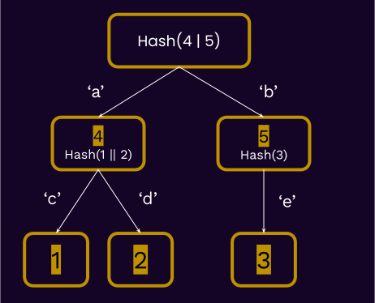
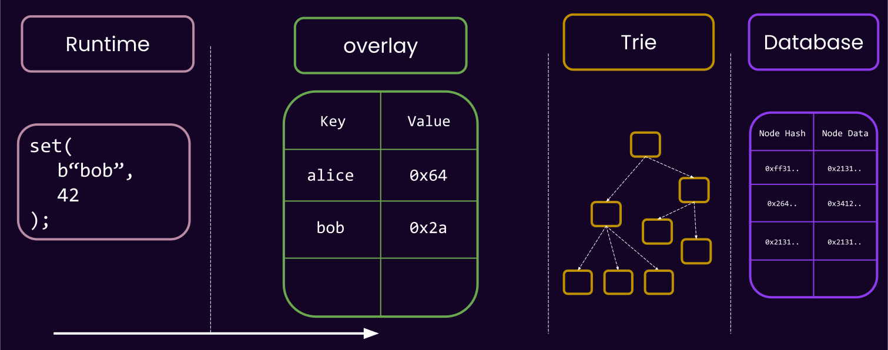

<!DOCTYPE html>
<html lang="en">

<head>
  <meta charset="utf-8" />
  <meta name="viewport" content="width=device-width, initial-scale=1.0, maximum-scale=1.0, user-scalable=no" />

  <title>Substrate Merklized Storage</title>
  <link rel="shortcut icon" href="./../../assets/favicon.ico" />
  <link rel="stylesheet" href="./../../dist/reset.css" />
  <link rel="stylesheet" href="./../../dist/reveal.css" />
  <link rel="stylesheet" href="./../../assets/styles/PBA-theme.css" id="theme" />
  <link rel="stylesheet" href="./../../css/highlight/shades-of-purple.css" />

  <link rel="stylesheet" href="./../.././assets/styles/custom-classes.css" />

</head>

<body class="site">
  <header class="site-header">
    <!-- This logo is a link only on the watching server, not the production build -->
    <a href="">
      
    </a>
  </header>
  <main class="reveal">
    <article class="slides">
      <section  data-markdown><script type="text/template">

# Substrate Storage
</script></section><section ><section data-markdown><script type="text/template">
## What We Know So Far


</script></section><section data-markdown><script type="text/template">
### What We Know So Far

- Recall that at the `sp_io` layer, you have **opaque keys and values**.

- `sp_io::storage::get(vec![8, 2])`;
  - `vec![8, 2]` is a "storage key".
- `sp_io::storage::set(vec![2, 9], vec![42, 33])`;
</script></section><section data-markdown><script type="text/template">
### What We Know So Far

Nomenclature (with some simplification):

> Environment providing host functions, namely storage ones: "`Externalities` Environment".

<aside class="notes"><ul>
<li>In Substrate, a type needs to provide the environment in which host functions are provided, and can be executed.</li>
<li>We call this an &quot;externality environment&quot;, represented by <a href="https://paritytech.github.io/substrate/master/sp_externalities/trait.Externalities.html"><code>trait Externalities</code></a>.</li>
<li>By convention, an externality has a &quot;<strong>backend</strong>&quot; that is in charge of dealing with storage.</li>
</ul>
</aside></script></section><section data-markdown><script type="text/template">
### What We Know So Far

```rust
sp_io::TestExternalities::new_empty().execute_with(|| {
  sp_io::storage::get(..);
});
```
</script></section><section data-markdown><script type="text/template">
### What We Know So Far


</script></section></section><section ><section data-markdown><script type="text/template">
## Key Value

- How about a key-value storage externality? why not? 🙈
</script></section><section data-markdown><script type="text/template">
### Key Value


</script></section><section data-markdown><script type="text/template">
### Key Value

- "_Storage keys_" (whatever you pass to `sp_io::storage`) directly maps to "_database keys_".
- O(1) read and write.
- Hash all the data to get the root.

<aside class="notes"><p>Good time to hammer down what you mean by storage key and what you mean by database key.</p>
<p>literally imagine that in the implementation of <code>sp_io::storage::set</code>, we write it to a key-value
database.</p>
</aside></script></section><section data-markdown><script type="text/template">
### Key Value

- If alice only has this root, how can I prove to her how much balance she has?

SEND HER THE WHOLE DATABASE 😱.

<!-- .element: class="fragment" -->

<aside class="notes"><p>Alice is representing a light client, I represent a full node.</p>
</aside></script></section><section data-markdown><script type="text/template">
### Key Value

- Moreover, if you change a single key-value, we need to re-hash the whole thing again to get the updated state root 🤦.
</script></section></section><section ><section data-markdown><script type="text/template">
## Substrate Storage: Merklized

- This brings us again to why blockchain based systems tend to "merkelize" their storage.
</script></section><section data-markdown><script type="text/template">
### Merklized

> Substrate uses a base-16, (patricia) radix merkle trie.
</script></section><section data-markdown><script type="text/template">
<pba-cols>
<pba-col>

<diagram class="mermaid">
%%{init: {'theme': 'dark', 'themeVariables': { 'darkMode': true }}}%%
flowchart TD
  A["A \n value: Hash(B|C)"] --> B["B \n value: Hash(B|E)"]
  A --> C["C \n value: Hash(F) \n"]
  B --> D["D \n value: 0x12"]
  B --> E["E \n value: 0x23"]
  C --> F["F \n value: 0x34"]
</diagram>

<!--  -->

</pba-col>
<pba-col>

- Merkle tree.
- Typically contains values at leafs.

</pba-col>
</pba-cols>
</script></section><section data-markdown><script type="text/template">
<pba-cols>
<pba-col>

<diagram class="mermaid">
%%{init: {'theme': 'dark', 'themeVariables': { 'darkMode': true }}}%%
flowchart TD
  A --b--> C["C \n Hash(F) \n"]
  A["A \n value: Hash(B|C)"] -- a --> B["B \n value: Hash(B|E)"]
  B --c--> D["D \n value: 0x12"]
  B --d--> E["E \n value: 0x23"]
  C --e--> F["F \n value: 0x34"]
</diagram>

<!--  -->

</pba-col>
<pba-col>

- Trie.
- Assuming only leafs have data, this is encoding:

<table>
<tr>
  <td> "ac" => 0x12</td>
</tr>
<tr>
  <td> "ad" => 0x23</td>
</tr>
<tr>
  <td> "be" => 0x34</td>
</tr>
</table>

</pba-col>
</pba-cols>

<aside class="notes"><p>this is how we encode key value based data in a trie.</p>
</aside></script></section><section data-markdown><script type="text/template">
<pba-cols>
<pba-col>

<diagram class="mermaid">
%%{init: {'theme': 'dark', 'themeVariables': { 'darkMode': true }}}%%
flowchart TD
  A["A \n Hash(B|C)"] -- a --> B["B \n Hash(B|E)"]
  A --be--> F["F \n value: 0x34"]
  B --c--> D["D \n value: 0x12"]
  B --d--> E["E \n value: 0x23"]
</diagram>

<!--  -->

</pba-col>
<pba-col>

- Radix Tree.
- Less nodes to encode the same data.

<table>
<tr>
  <td> "ac" => 0x1234</td>
</tr>
<tr>
  <td> "ad" => 0x1234</td>
</tr>
<tr>
  <td> "be" => 0x1234</td>
</tr>
</table>

</pba-col>
</pba-cols>

<aside class="notes"><p>more resources:</p>
<ul>
<li><a href="https://en.wikipedia.org/wiki/Merkle_tree">https://en.wikipedia.org/wiki/Merkle_tree</a></li>
<li><a href="https://en.wikipedia.org/wiki/Radix_tree">https://en.wikipedia.org/wiki/Radix_tree</a></li>
<li><a href="https://en.wikipedia.org/wiki/Trie">https://en.wikipedia.org/wiki/Trie</a></li>
</ul>
<p>Namely:</p>
<blockquote>
<p>The data structure was invented in 1968 by Donald R. Morrison, with whom it is primarily
associated, and by Gernot Gwehenberger.</p>
</blockquote>
<blockquote>
<p>Donald Knuth, pages 498-500 in Volume III of The Art of Computer Programming, calls these
&quot;Patricia&#39;s trees&quot;, presumably after the acronym in the title of Morrison&#39;s paper: &quot;PATRICIA -
Practical Algorithm to Retrieve Information Coded in Alphanumeric&quot;. Today, Patricia tries are seen
as radix trees with radix equals 2, which means that each bit of the key is compared individually
and each node is a two-way (i.e., left versus right) branch.
---v</p>
</blockquote>
<h3 id="merklized">Merklized</h3>
<blockquote>
<p>Substrate uses a base-16, (patricia) radix merkle trie.</p>
</blockquote>
</aside></script></section><section data-markdown><script type="text/template">
### Merklized

- Substrate does in fact use a key-value based database under the hood..
- In order to store trie nodes, not direct storage keys!

<br/>

<div>

- We take the **storage key**, and make it be the path on a trie.

</div>
<!-- .element: class="fragment" -->

<div>

- Then we store the **trie nodes**, referenced by **their hash**, in the main database.

</div>
<!-- .element: class="fragment" -->
</script></section><section data-markdown><script type="text/template">
### Merklized


<aside class="notes"><p>imagine:</p>
<p>sp_io::storage::get(b&quot;ad&quot;)</p>
</aside></script></section><section data-markdown><script type="text/template">
### Merklized


<aside class="notes"><p>realistically, the storage key is something like <code>(system_)16</code>, but I have put the strings here for
simplification.</p>
</aside></script></section></section><section ><section data-markdown><script type="text/template">
## Trie Walking Example

- We know the state-root at a given block `n`.
- assume this is a base-26, patricia trie. English alphabet is the key-scope.
- Let's see the steps needed to read `balances_alice` from the storage.
</script></section><section data-markdown><script type="text/template">

</script></section><section data-markdown><script type="text/template">

</script></section><section data-markdown><script type="text/template">

</script></section><section data-markdown><script type="text/template">

</script></section><section data-markdown><script type="text/template">

</script></section></section><section ><section data-markdown><script type="text/template">
## Merklized: Proofs

- If alice only has this root, how can I prove to her how much balance she has?
</script></section><section data-markdown><script type="text/template">


<aside class="notes"><p>The important point is that for example the whole data under <code>_system</code> is not hidden away behind one hash.</p>
<p>Dark blue are the proof, light blue&#39;s hashes are present.</p>
<p>Receiver will hash the root node, and check it against a publicly known storage root.</p>
<p>This differs slightly from how actual proof generation might work in the code.</p>
<p>In general, you have a tradeoff: send more data, but require less hashing on Alice, or opposite (this is what we call &quot;compact proof&quot;).</p>
</aside></script></section><section data-markdown><script type="text/template">
### Merklized: Proofs

- 🏆 Small proof size is a big win for light clients, _and_ **Polkadot**.
</script></section></section><section  data-markdown><script type="text/template">
## Merklized: Recap

<div>

- Storage key (whatever you pass to `sp_io`) is the path on the trie.

</div>
<!-- .element: class="fragment" -->

<div>

- Storage key is arbitrary length.
</div>
<!-- .element: class="fragment" -->

<div>

- Intermediary (branch) nodes could contain values.
  - `:code` contains some value, `:code:more` can also contain value.

</div>

<!-- .element: class="fragment" -->

<div>

- Storage Key != Database Key.
- 1 Storage access = Many data base access.

</div>
<!-- .element: class="fragment" -->

<aside class="notes"><p>how many database access would do you think it is?</p>
<p>we will explain this in a few slides, but assuming an order <code>N</code> tree, and assuming it is balanced,
it will be <code>O(LOG_n)</code>.</p>
</aside></script></section><section ><section data-markdown><script type="text/template">
## Base 2, Base 16, Base-26?

- Instead of alphabet, we use the base-16 representation of everything.

> Base-16 (Patricia) Merkle Trie.

- `System` -> `73797374656d`
- `:code` -> `3a636f646500`
</script></section><section data-markdown><script type="text/template">
### Base 2, Base 16, Base-26?


Tradeoff: "_IO count vs. Node size_"

<!-- .element: class="fragment" -->

Between a light clint and a full node, which one cares more about which?

<!-- .element: class="fragment" -->

<aside class="notes"><p>TODO: update figure to represent node size.</p>
<p>Light client cares about node size. When proof is being sent, there is no IO.</p>
<p>First glance, the radix-8 seems better: you will typically have less DB access to reach a key.
For example, with binary, with 3 IO, we can reach only 8 items, but with radix-8 512.</p>
<p>So why should not chose a very wide tree? because the wider you make the tree, the bigger each node
gets, because it has to store more hashes. At some point, this start to screw with both the proof
size and the cost of reading/writing/encoding/decoding all these nodes.</p>
</aside></script></section><section data-markdown><script type="text/template">
### Base 2, Base 16, Base-26?


<aside class="notes"><p>Here&#39;s a different way to represent it; the nodes are bigger on the base-16 trie.</p>
</aside></script></section><section data-markdown><script type="text/template">
### Base 2, Base 16, Base-26?

- base-2: Small proofs, more nodes.
- base-8: Bigger proofs, less nodes.

✅ 16 has been benchmarked and studies years ago as a good middle-ground.

<aside class="notes"><p>Anyone interested in blockchain and research stuff should look into this.</p>
</aside></script></section></section><section ><section data-markdown><script type="text/template">
### Unbalanced Tree


</script></section><section data-markdown><script type="text/template">
### Unbalanced Tree

- Unbalanced tree means unbalanced performance. An attack vector, if done right.
- More about this in FRAME storage, and how it is prevented there.

<aside class="notes"><ul>
<li>under-estimate weight/gas etc.</li>
<li>You as the runtime developer must ensure that you use the right keys.</li>
<li>This is particularly an issue if an end user can control where they can insert into the trie!</li>
<li>The main prevention is using a cryptographically secure hash function on the frame side.</li>
</ul>
</aside></script></section></section><section ><section data-markdown><script type="text/template">
## WAIT A MINUTE... 🤔

- Two common scenarios that merkle proofs are kinda unfair:
  - If the one of the parent nodes has some large data.
  - If you want to prove the deletion/non-existence of a leaf node.
</script></section><section data-markdown><script type="text/template">

</script></section><section data-markdown><script type="text/template">
## WAIT A MINUTE... 🤔

New "tie format" 🌈:

- All data containing more than 32 bytes are replaced with their hash.
- The (larger than 32 bytes) value itself stored in the database under this hash.

```rust
struct RuntimeVersion {
  ...
  state_version: 0,
}
```

<!-- .element: class="fragment" -->
</script></section><section data-markdown><script type="text/template">


What is the ramification of this for full nodes, and light clients?

<aside class="notes"><p>TODO: update figure.</p>
<p>Both read and write have an extra step now, but proof are easier.</p>
<p>Note from emeric: the green node is not really a &quot;real&quot; node, it is just <code>{ value: BIG_STUFF }</code>
stored in the database. I will skip this detail for the sake of simplicity. One can assume that the
green node is like any other node in the trie.</p>
</aside></script></section></section><section  data-markdown><script type="text/template">
## Substrate Storage: The Updated Picture


</script></section><section  data-markdown><script type="text/template">
## WAIT A MINUTE... 🤔

- We rarely care about state root and all the trie shenanigans before the end of the block...

> A block-scoped cache for storage.

<!-- .element: class="fragment" -->

<aside class="notes"><p>in other words, one should one care too much about updating a &quot;trie&quot; and all of its hashing details
while the block is still being executed? all of that can be delayed.</p>
</aside></script></section><section ><section data-markdown><script type="text/template">
## Overlay

- Is a cache layer outside of the Runtime.
- It works **based on key-values**, **not trie-format**.
</script></section><section data-markdown><script type="text/template">
### Overlay

- Almost identical semantic to your CPU cache:
  - <!-- .element: class="fragment" --> Once you read a value, it stays here, and can be re-read for cheap.
  - <!-- .element: class="fragment" --> Once you write a value, it will only be written here.
    - It can be read for cheap.
  - <!-- .element: class="fragment" --> All writes are flushed at the end of the runtime api call.
- <!-- .element: class="fragment" --> No race conditions as runtime is single-threaded.
</script></section><section data-markdown><script type="text/template">

</script></section><section data-markdown><script type="text/template">

</script></section><section data-markdown><script type="text/template">

</script></section><section data-markdown><script type="text/template">

</script></section><section data-markdown><script type="text/template">

</script></section><section data-markdown><script type="text/template">

</script></section><section data-markdown><script type="text/template">
### Overlay

<pba-cols>

<pba-col>

- Cheap != Free

</pba-col>
<pba-col>


</pba-col>

</pba-cols>

<aside class="notes"><ul>
<li>In your code, you often have an option to either pass stack variables around, or re-read code from
<code>sp-io</code>. Most often, this is a micro-optimization that won&#39;t matter too much, but in general you
should know that the former is more performant, as won&#39;t go the the host at all.</li>
<li>A deletion is basically a write to <code>null</code>.</li>
</ul>
</aside></script></section><section data-markdown><script type="text/template">
### Overlay

- The overlay is also able to spawn child-overlays, know as "_storage layer_".
- Useful for having a _transactional_ block of code.

```rust
// spawn a new layer.
with_storage_layer(|| {
    let foo = sp_io::storage::read(b"foo");
    sp_io::storage::set(b"bar", foo);

    if cond {
        Err("this will be reverted")
    } else {
        Ok("This will be commit to the top overlay")
    }
})
```

<!-- .element: class="fragment" -->

<aside class="notes"><ul>
<li>implement with zero-copy. So, the size of values is not so important, it is more about the number.</li>
</ul>
</aside></script></section><section data-markdown><script type="text/template">

</script></section><section data-markdown><script type="text/template">

</script></section><section data-markdown><script type="text/template">
### Overlay

- There is a limit to how many nested layers you can spawn
- It is not free, thus it is attack-able.

```rust
with_storage_layer(|| {
    let foo = sp_io::storage::read(b"foo");
    with_storage_layer(|| {
        sp_io::storage::set(b"foo", b"foo");
        with_storage_layer(|| {
            sp_io::storage::set(b"bar", foo);
            with_storage_layer(|| {
                sp_io::storage::set(b"foo", "damn");
                Err("damn")
            })
            Ok("what")
        })
        Err("the")
    });
    Ok("hell")
})
```
</script></section><section data-markdown><script type="text/template">
### Overlay

- What if I call `sp_io::storage::root()` in the middle of the block?
- Can the overlay respond to this?

<aside class="notes"><p>NO! overlay works on the level on key-values, ot knows nothing of trie nodes, and to compute the
root we have to go to the trie layer and pull a whole lot of data back from the disk and build all
the nodes etc. etc.</p>
</aside></script></section><section data-markdown><script type="text/template">
### Overlay: More Caches

- There are more caches in the trie layer as well. But outside of the scope of this lecture.

```bash
./substrate --help | grep cache
```

<aside class="notes"><p><a href="https://www.youtube.com/embed/OoMPlJKUULY">https://www.youtube.com/embed/OoMPlJKUULY</a></p>
</aside></script></section></section><section ><section data-markdown><script type="text/template">
### Substrate Storage: Final Figure


</script></section><section data-markdown><script type="text/template">
### Substrate Storage

There are multiple implementations of `Externalities`:

- [`TestExternalities`](https://paritytech.github.io/substrate/master/sp_state_machine/struct.TestExternalities.html):
  - `Overlay`
  - `TrieDb` with `InMemoryBackend`
- [`Ext`](https://paritytech.github.io/substrate/master/sp_state_machine/struct.Ext.html) (the real thing 🫡)
  - `Overlay`
  - `TrieDb` with a real database being the backend
</script></section><section data-markdown><script type="text/template">
### Substrate Storage

- Recall: Any code accessing host functions needs to wrapped in something that implements
  `Externalities`

```rust
// ❌
let x = sp_io::storage::get(b"foo");

// error:
// thread '..' panicked at '`get_version_1` called outside of an Externalities-provided environment.'
```

```rust
// ✅
SomeExternalities.execute_with(|| {
  let x = sp_io::storage::get(b"foo");
});
```
</script></section></section><section ><section data-markdown><script type="text/template">
## State Pruning

- Each runtime will think that it has access to **_its_** full state, behind `sp_io::storage`.
- Does the client then store one full trie per-block?

Surely not.

<!-- .element: class="fragment" -->

<aside class="notes"><ul>
<li>Only trie nodes that are updated from one block to the other are created as new DB Keys.</li>
<li>For the unchanged ones, we only reference the existing one.</li>
</ul>
</aside></script></section><section data-markdown><script type="text/template">
### State Pruning

</script></section><section data-markdown><script type="text/template">
### State Pruning

</script></section><section data-markdown><script type="text/template">
### State Pruning

</script></section><section data-markdown><script type="text/template">
### State Pruning


</script></section><section data-markdown><script type="text/template">
## State Pruning

- 🧠 Data stored onchain, but rarely changed? De nada.
- State pruning is an _entirely client side optimization_,
</script></section></section><section ><section data-markdown><script type="text/template">
## Child Trees


</script></section><section data-markdown><script type="text/template">
### Child Trees

- Stored on a different DB Column (async-ish bulk deletion).
- Most importantly, alternative trie formats.
</script></section></section><section  data-markdown><script type="text/template">
## Trie Format Matters!

- Recall that in our "trie walking", we took the state root, and got the root node from the DB.
- The state root of any substrate-based chain, including Polkadot, is the hash of the "Trie Node".

> Trie format matters! and therefore it is part of [the polkadot spec](https://spec.polkadot.network).

<aside class="notes"><p>Meaning, if another client wants to sync polkadot, it should know the details of the trie format.</p>
</aside></script></section><section  data-markdown><script type="text/template">
#### Lecture Summary/Recap:

<pba-cols>

<pba-col>

- KV-Based storage
- Merklized storage, and proofs
- Large nodes
- Radix order consequences
- Unbalanced trie
- State pruning

</pba-col>

<pba-col>

</pba-col>

</pba-cols>
</script></section><section  data-markdown><script type="text/template">
## Additional Resources! 😋

> Check speaker notes (click "s" 😉)


<aside class="notes"><ul>
<li><p>Shawn&#39;s deep dive: <a href="https://www.shawntabrizi.com/substrate/substrate-storage-deep-dive/">https://www.shawntabrizi.com/substrate/substrate-storage-deep-dive/</a></p>
</li>
<li><p>Basti&#39;s talk on Trie caching: <a href="https://www.youtube.com/watch?v=OoMPlJKUULY">https://www.youtube.com/watch?v=OoMPlJKUULY</a></p>
</li>
<li><p>About state version:</p>
<ul>
<li><a href="https://github.com/paritytech/substrate/pull/9732">https://github.com/paritytech/substrate/pull/9732</a></li>
<li><a href="https://github.com/paritytech/substrate/discussions/11824">https://github.com/paritytech/substrate/discussions/11824</a></li>
</ul>
</li>
<li><p>An &quot;old but gold&quot; read about trie in Ethereum: <a href="https://medium.com/shyft-network/understanding-trie-databases-in-ethereum-9f03d2c3325d">https://medium.com/shyft-network/understanding-trie-databases-in-ethereum-9f03d2c3325d</a></p>
</li>
<li><p>On optimizing substrate storage proofs: <a href="https://github.com/paritytech/substrate/issues/3782">https://github.com/paritytech/substrate/issues/3782</a></p>
</li>
<li><p>Underlying trie library maintained by Parity: <a href="https://github.com/paritytech/trie">https://github.com/paritytech/trie</a></p>
</li>
<li><p><a href="https://github.com/paritytech/trie/">https://github.com/paritytech/trie/</a></p>
</li>
<li><p><a href="https://spec.polkadot.network/chap-state#sect-state-storage">https://spec.polkadot.network/chap-state#sect-state-storage</a></p>
</li>
<li><p><a href="https://research.polytope.technology/state-(machine)-proofs">https://research.polytope.technology/state-(machine)-proofs</a></p>
</li>
<li><p>An interesting, but heretical idea: can the runtime of block N, access state of block N-1? HELL
NO. It might sound like a &quot;but why nooooot&quot; type of situation, but it breaks down all assumptions
about what a state transition is. The runtime is the state transition function. Recall the formula
of that, and then you will know why this is not allowed.</p>
</li>
</ul>
<h3 id="post-lecture-feedback">Post Lecture Feedback</h3>
<p>Double check the narrative and example of the <code>BIG_STUFF</code> node. An example/exercise of some sort
would be great, where students call a bunch of <code>sp_io</code> functions, visualize the trie, and invoke
proof recorder, and see which pars of the trie is exactly part of the proof.</p>
</aside></script></section>
    </article>
  </main>

  <script src="./../../dist/reveal.js"></script>

  <script src="./../../plugin/markdown/markdown.js"></script>
  <script src="./../../plugin/highlight/highlight.js"></script>
  <script src="./../../plugin/zoom/zoom.js"></script>
  <script src="./../../plugin/notes/notes.js"></script>
  <script src="./../../plugin/math/math.js"></script>

  <script src="./../../assets/plugin/mermaid.js"></script>
  <script src="./../../assets/plugin/mermaid-theme.js"></script>

  <script src="./../../assets/plugin/chart/chart.js"></script>
  <script src="./../../assets/plugin/chart/chart.min.js"></script>

  <script src="./../../assets/plugin/tailwindcss.min.js"></script>

  <script>
    function extend() {
      var target = {};
      for (var i = 0; i < arguments.length; i++) {
        var source = arguments[i];
        for (var key in source) {
          if (source.hasOwnProperty(key)) {
            target[key] = source[key];
          }
        }
      }
      return target;
    }

    // default options to init reveal.js
    var defaultOptions = {
      controls: true,
      progress: true,
      history: true,
      center: true,
      transition: 'default', // none/fade/slide/convex/concave/zoom
      slideNumber: true,
      mermaid: {
        startOnLoad: false,
        logLevel: 3,
        theme: 'base',
        themeVariables: {
          primaryColor: purple,
          primaryTextColor: white,
          primaryBorderColor: pink,
          lineColor: pink,
          secondaryColor: lightPurple,
          tertiaryColor: lightPurple,
        },
      },
      chart: {
        defaults: {
          color: 'lightgray', // color of labels
          scale: {
            beginAtZero: true,
            ticks: { stepSize: 1 },
            grid: { color: "lightgray" }, // color of grid lines
          },
        },
        line: { borderColor: ["#ccc", "#E6007A", "#6D3AEE"], "borderDash": [[5, 10], [0, 0]] },
        bar: { backgroundColor: ["#ccc", "#E6007A", "#6D3AEE"] },
      },
      plugins: [
        RevealMarkdown,
        RevealHighlight,
        RevealZoom,
        RevealNotes,
        RevealMath,
        RevealMermaid,
        RevealChart
      ]
    };

    // options from URL query string
    var queryOptions = Reveal().getQueryHash() || {};

    var options = extend(defaultOptions, {"width":1400,"height":900,"margin":0,"minScale":0.2,"maxScale":2,"transition":"none","controls":true,"progress":true,"center":true,"slideNumber":true,"backgroundTransition":"fade"}, queryOptions);
  </script>


  <script>
    Reveal.initialize(options);
  </script>
</body>

</html>